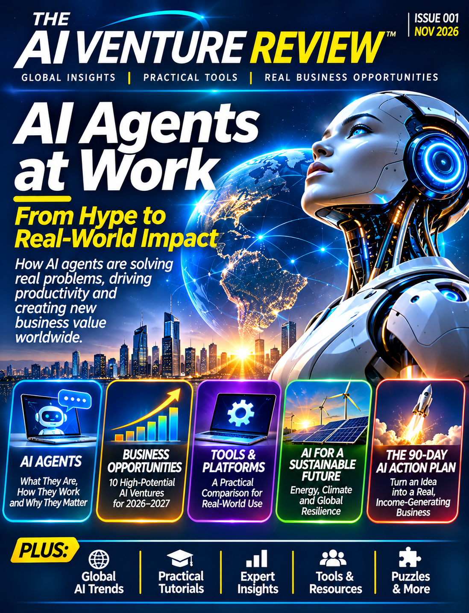

01 / Magazine
AI Agents at Work
Our inaugural issue explores how AI agents work, where they help and how to start building.
Explore the magazine →Understand the technology. Discover the opportunities. Build something useful. Practical AI insights for readers everywhere.
Issue 001 · AI Agents at Work · Public release planned November 15

Issue 001 · November 2026
Go beyond AI headlines with practical tutorials, curated tools, emerging trends and business opportunities.
Our inaugural issue explores how AI agents work, where they help and how to start building.
Explore the magazine →A free Starter Edition designed to help readers translate ideas into practical steps.
Explore the Field Guide →Curated tools, prompts, learning pathways and starter exercises, growing over time.
Visit the Resource Vault →For entrepreneurs, professionals, students, educators and anyone exploring what AI can do in the real world.
AI agents · Business opportunities · Tools and platforms · Responsible innovation · Practical tutorials · Future skills
We're building our readership. No audience size or advertising performance is implied.
Advertising opportunities, sponsorship discussions and collaboration inquiries for an emerging independent publication.
Advertising informationAdvertising Prospectus · Artwork & Template Guide · Interactive Ad Placement Simulator
The template guide and simulator are planned, not yet operational.